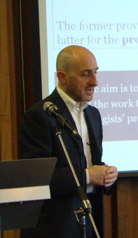

|
 |
ITALIAN UNIVERSITY CURRICULA IN PSYCHOLOGY: AN APPRAISAL OF THE EUROPSY PROJECTThe EUROPSY certificate is the comprehensive European standard for the education and training of psychologists who qualify for independent professional practice. The standard is based on established scientific criteria for psychology as a science and profession. EuroPsy is awarded on the basis of: (a) demonstrated completion of an academic curriculum in psychology of sufficient scope; (b) demonstrated competence in the performance of professional roles during supervised practice; (c) endorsement of European (as well as national) ethical standards for psychologists. Italy is one of the countries in which experimentation to award EUROPSY has been implemented. To this end, the Italian Awarding Committee (CNAE–Italy), has been nominated by the “Italian Network of Professional Psychologists Associations”, the National Association of EFPA for Italy. Among the other activities, CNAE has so far (a) translated the Europsy document into Italian; (b) set up a web page www.inpa-europsy.it aimed at both informing about the certificate, in Italian as well as in English, and processing of applications; (c) sent a letter to all the Deans of Psychology Faculties of Italy asking for information about the university curricula in psychology in order (i) to advise institutions of higher learning of conditions for approval, and (ii) to prepare and publish a list of currently approved curricula for academic education in psychology. The experimentation about awarding EUROPSY has been carried out by considering both the standard and the grandparenting procedures, and has involved about 500 psychologists registered with the National Board. Gender, years of employment, geographical distribution, and professional context were all taken into consideration in selecting the sample. The results showed that, although there are differences in the psychology curricula offered by different Universities, many curricula are in line with the EUROPSY standard. Specifically, such curricula offer (a) psychology courses addressing issues related to individual, groups, and society; (b) explanatory, methodological, technical, and non-psychological theories and skills; stage and/or internship; and a research project and thesis. An area that is somewhat neglected in the Italian curricula in psychology is that of the ethical and deontological principles of the profession, to which there should be a formal introduction during the academic training. Most Universities also have a role in the year of supervised practice that takes place after completion of the study curriculum, i.e., after having obtained the M.A. diploma, and this is an area where room for improvement exists, especially by adopting a competence based approach in the actual practice and its evaluation by both the supervisor and the psychologist practitioner-in-training. |
© 2008 Victor Karandashev